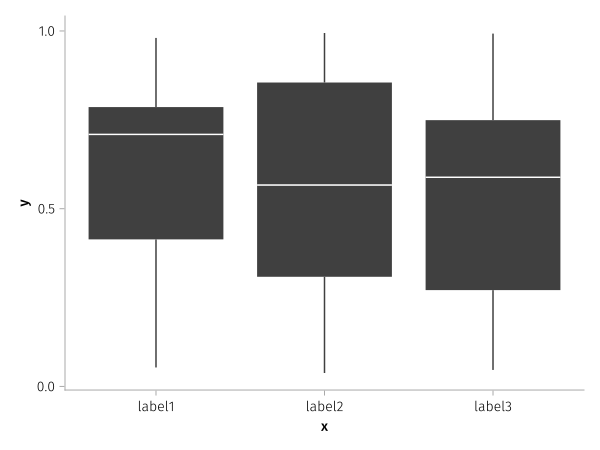
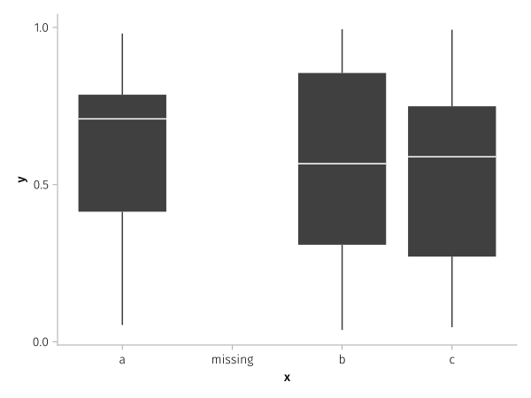
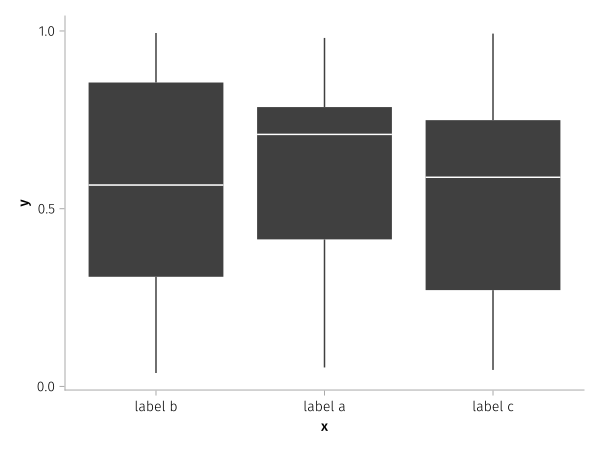
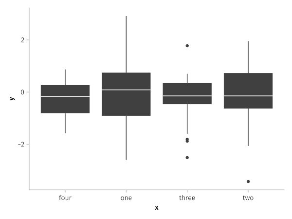
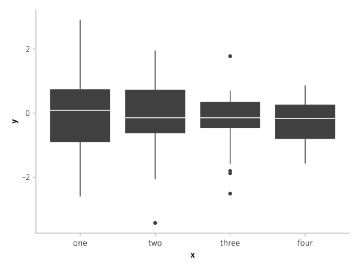
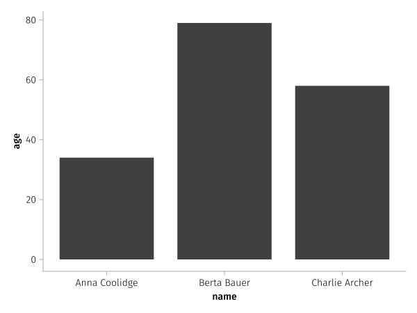
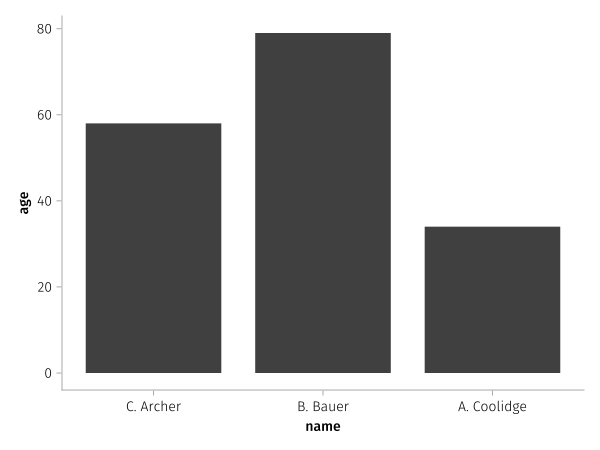

Discrete scales

using AlgebraOfGraphics, CairoMakieBy default categorical ticks, as well as names from legend entries, are taken from the value of the variable converted to a string. Scales can be equipped with labels to overwrite that. You can either use the renamer function to apply relabeling or reordering to some column on the fly, or you use the categories keyword for the respective scale in the draw call.
The categories keyword (added in v0.7) also allows adding categories not present in the data.
df = (x=rand(["a", "b", "c"], 100), y=rand(100))
plt = data(df) * mapping(:x, :y) * visual(BoxPlot)
draw(plt)plt = data(df) * mapping(:x, :y) * visual(BoxPlot)
draw(plt, scales(X = (;
categories = ["a" => "label1", "b" => "label2", "c" => "label3"]
)))
The same operation can be done with renamer as well which modifies the input data
plt = data(df) *
mapping(
:x => renamer("a" => "label1", "b" => "label2", "c" => "label3"),
:y
) * visual(BoxPlot)
draw(plt)With categories, you can add further categories that might be missing from your data
plt = data(df) * mapping(:x, :y) * visual(BoxPlot)
draw(plt, scales(X = (;
categories = ["a", "missing", "b", "c"]
)))
The order can also be changed:
plt = data(df) * mapping(:x, :y) * visual(BoxPlot)
draw(plt, scales(X = (;
categories = ["b" => "label b", "a" => "label a", "c" => "label c"]
)))
Or with renamer:
plt = data(df) *
mapping(
:x => renamer("b" => "label b", "a" => "label a", "c" => "label c"),
:y
) * visual(BoxPlot)
fg = draw(plt)When categories come from different datasets, you can either apply the same renamer to multiple mappings, or set the ordering at one place in categories:
df1 = (; x = rand(["one", "two"], 100), y = randn(100))
df2 = (; x = rand(["three", "four"], 50), y = randn(50))
plt = (data(df1) + data(df2)) * mapping(:x, :y) * visual(BoxPlot)
draw(plt)
draw(plt, scales(X = (;
categories = ["one", "two", "three", "four"]
)))
You can also pass a function to categories, which has to return a vector with (optionally labelled) categories in the desired order. For example, strings are by default ordered alphabetically:
df = (; name = ["Anna Coolidge", "Berta Bauer", "Charlie Archer"], age = [34, 79, 58])
plt = data(df) * mapping(:name, :age) * visual(BarPlot)
draw(plt)
Instead of specifying the order manually, we could use a function to order by last name:
draw(plt, scales(X = (;
categories = cats -> sort(cats; by = name -> split(name)[2])
)))Or even combine this with a relabeling function that shortens the first name to the initial:
function initialed(name)
a, b = split(name)
return name => "$(first(a)). $b"
end
draw(plt, scales(X = (;
categories = cats -> initialed.(sort(cats; by = name -> split(name)[2]))
)))
This page was generated using DemoCards.jl and Literate.jl.